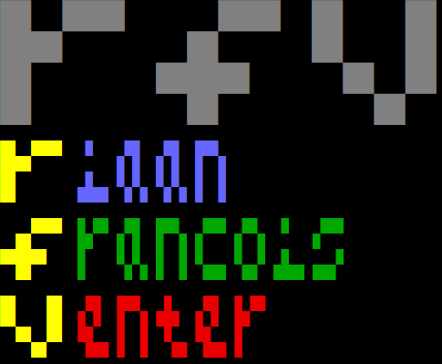

Riaan Francois Venter
Computation, Logic and Finance are my passions.
I exercise, eat healthy, no alcohol or smoke.
From Johannesburg. Traveling the world with my family. Lived in London (4y), Dubai (4y), Doha (4y), Manila (5y), and visited Hong Kong, Singapore, Cambodia, Thailand.